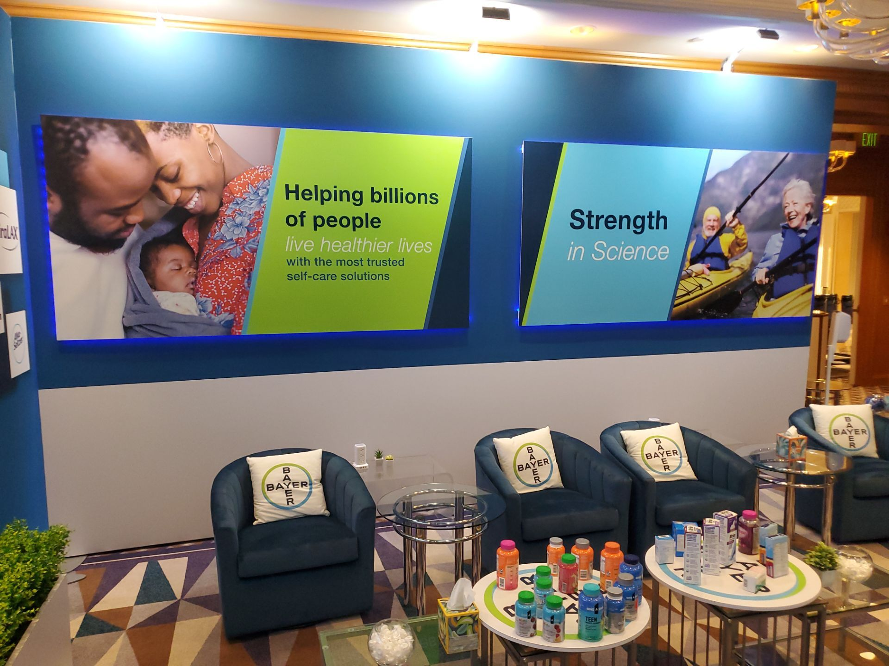
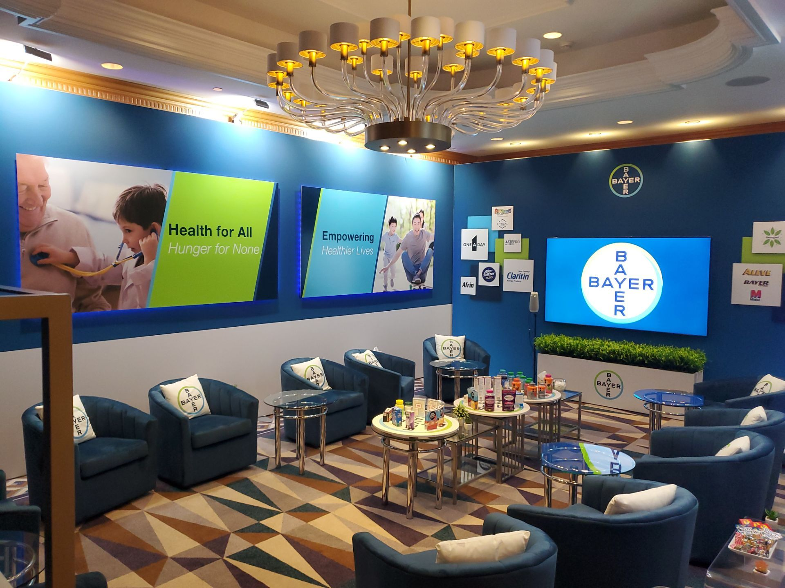
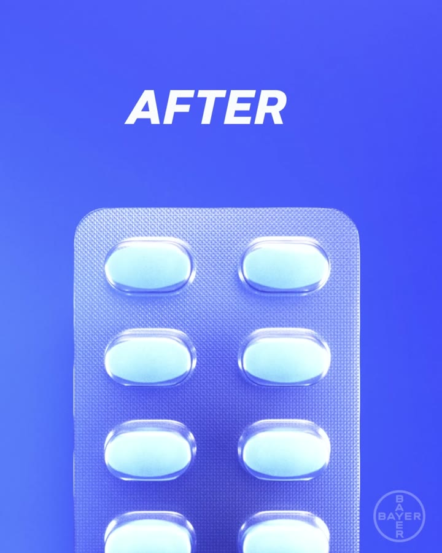
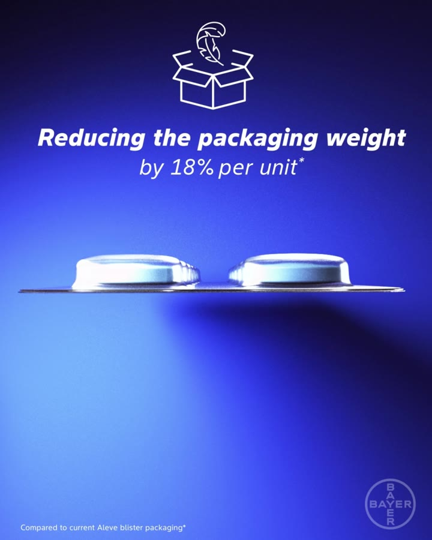
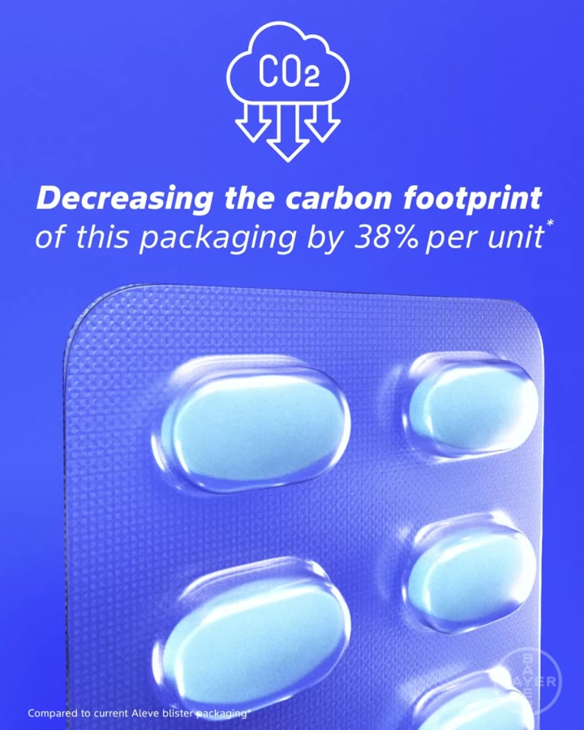

Michael Scrivana · for Stryker · Senior Manager, Communications
The message landing is not the finish line — you find out why it stopped short, then change the situation.
Twelve years in regulated healthcare, seven of them writing and building the communications a global consumer-health organization runs on. Six cases: the executive layer — the words leaders deliver and the material that carries them; change communications for a 115-person organization inside a roadmap covering more than a thousand people; high-impact business events; the toolkits that make consistency scale; a published corporate sustainability campaign you can watch on Bayer’s own channel; and the one that matters most for this role — what I do when a message does not land.
Michael Scrivana — Senior Designer & AI Lead, Product Experience, Bayer Consumer Health. Career started on the assembly floor at Siemens Healthcare building clinical diagnostic analyzers; every year since has been inside regulated healthcare. linkedin
115
person global organization — change communications I own
1,000+
people covered by the roadmap it sits inside
3 × 3
years, formats — one event, one system: virtual, hybrid, in person
100+
marketers taken through required training, delivered personally
6
craft disciplines — zero to active use in 12 months
I have never believed that understanding is enough. Every time I have communicated something at scale, the interesting work started after it landed — measure what actually happened, find out where it stopped short, and change the situation rather than repeating yourself louder.
01
Executive communications — the words, and the thing that carries them
Talking points, speeches, scripts and briefing narratives · the decks, agendas and stage content they live inside · at divisional and senior-leadership level
A day of leadership content, planned as one argument. Four sessions, each with its own thesis — holistic brand building, breaking through the clutter, connecting with emotion, being a storyteller — sequenced so the day builds rather than accumulates. The agenda is the first piece of communication anybody reads, and it is where the narrative either has a shape or does not.
Session cards as narrative beats. Each title card is one idea, stated once, in the language leadership had agreed to use. The visual system does the remembering so the speaker does not have to.The same system, a different beat. One grammar across an entire day of speakers, internal and external, so the room reads it as a single message rather than a series of appearances.
Executive visibility, including other people’s. External keynote speakers arrive with their own material and their own brand. Making them land inside ours — without flattening either — is the same job as preparing an internal leader for a stage.
What I actually do
I write the executive layer: talking points and leader messages, speeches and scripts that other people deliver, and the briefing materials and strategic narrative underneath them — at divisional and senior-leadership level. Then I build what carries them.
Why that combination is rare
Most people who can write an executive narrative hand it to a designer. Most people who can build the deck did not write the argument. The seam between those two is where meaning usually leaks — a strong point rendered weakly, or a beautiful slide making a claim nobody agreed to.
The evidence I cannot show you
The strongest examples are internal and stay that way: retailer selling presentations I have owned end to end — the narrative, the data slides, the key visuals — plus the master template system the category decks are constructed from; and material carried to divisional leadership and board level. The most consequential was a divisional AI roadmap for a science organization of more than a thousand people, which I co-authored and then carried to the division’s Science President across a multi-day workshop in Cambridge, England. That workshop produced a new role, a promotion, and the roadmap itself. I am happy to walk through any of it in a conversation; none of it belongs on a public page.
Change communications for 115 people, inside a roadmap covering a thousand
Strategy, cadence, channels and audience — not just the artifacts · a champion network across six disciplines · zero to active use in twelve months
One destination, so the message has somewhere to live. Internal communications fail quietly when they are only ever events. This is the standing surface underneath the campaign — searchable, current, and the place every briefing, recap and announcement points back to.Commitments in public, with their status attached. Four outcomes per ninety-day cycle, each visibly in progress or not. Publishing the status is the communication — it is what stops a transformation program from becoming an announcement people stopped believing.Internal programs need identities too. A town hall series, a curiosity program, a think tank, an internal awards program, the tour. Employees do not experience “internal communications” — they experience a set of named things that either feel like one organization or do not.
The problem
A 115-person global organization across six craft disciplines had to change how it worked, inside an enterprise roadmap covering more than a thousand people. Nobody could be ordered to. The change had no budget line for compliance and no manager who could enforce it — which is the normal condition of change communications and the reason most of it fails.
What I ran
The whole program: strategy, cadence, channels and audience. Daily briefings, executive leadership decks, weekly recaps, town halls and leadership forums, internal campaigns and intranet channels, and a change-champion network with a named person inside each of the six disciplines. Plus recurring immersion sessions for leadership — demonstration and discussion, not slideware at them.
What made it stick, and how I know
I stopped asking people to adopt something and started removing the trip. The tools were shipped into the places people already worked rather than to a new destination, and every pilot went first to the team with the nearest real deadline — not the team that asked politely, and not my own function. A partner team under pressure will tell you the truth about whether something helps. The number I watch is not attendance or opens; it is usage that repeats. In twelve months the organization went from no AI literacy at all to active use across all six craft disciplines, and one leadership workshop converted into five concrete ninety-day commitments from leaders with no reporting line to me.
Zero to six disciplines, twelve months
Measured as repeat usage, not attendance.
Five 90-day commitments
From one leadership workshop, by leaders who do not report to me.
A champion in every discipline
Change carried by people inside the team, not broadcast at them.
internal & change communicationstown hallsinternal campaignsintranetenterprise strategyinfluence without authority
03
High-impact business events — the stage, and the room where customers sit
A 200+-attendee event, three consecutive years, three different formats · a customer-engagement suite at the industry trade show, consecutive years, six-figure budget
I draw the frames and then animate them. A shot-by-shot storyboard for the stage opener — blocks assembling into the hero mark — used to sell the direction internally before a frame of it was built. The film that ran in the room came from these panels, by the same hand.The teaser, three weeks earlier. An event is not one moment; it is a sequence of communications with a room at the end of it. This one starts as a teaser with no information in it at all.

Corporate messaging, at architectural scale. The built customer suite on the show floor. The lines on those walls are the enterprise narrative — the same words leadership uses, sized so a customer reads them from the aisle.

Where the meetings actually happen. Art-directed across consecutive years on a six-figure budget — vendor management, production timelines and spatial design, delivered to a fixed date that does not move.
One system, three years, three formats. The event ran virtual, then hybrid, then in person, with a different identity treatment each year held together by a single design system — identity, 3D, motion, live stage and the merchandise people took home. Surviving three formats is a harder test of a system than surviving three dates.
The problem
Business events are the one communication channel with no second draft. The date does not move, the room is either full or it is not, and everything — narrative, agenda, stage content, environment, follow-up — has to arrive finished on the same morning.
What I owned
The full identity and live production for a 200-plus-attendee event across three consecutive years, and the art direction of a customer-engagement suite at the industry trade show across consecutive years — a 20×30-foot footprint on a six-figure budget, including vendor selection, production timelines and spatial design.
Why the craft half matters to a communications team
Because it removes a translation step at the point where events usually fail. When the narrative changes four days out — and it always does — I can redraw the frame, rewrite the card and re-cut the film myself rather than briefing it out and waiting. That is not a claim about taste; it is a claim about latency under a fixed date, and it is the single most useful thing I bring to an event calendar that includes customer engagements, sales meetings, industry events and integration milestones.
Three years, three formats
Virtual, hybrid, in person — one system, held.
Storyboard to finished film
Drawn and animated by hand, the whole chain visible.
Six-figure build, consecutive years
Vendors, production timelines, spatial design, fixed date.
event brandingcustomer engagementsindustry eventsvideo contentagency & vendor direction
04
Toolkits, best practices and standards — consistency that does not depend on me
A brand book made the single standard every partner worked from · a shared vocabulary used across decks, pre-reads and internal tools · an accessibility standard with a check written into the gate
A shared vocabulary, stated once. One set of tokens, one brand mark, one type pairing — used across decks, pre-reads, internal tools and AI-generated material, so everything the organization ships reads as one family. Consistency is a supply problem before it is a discipline problem: make the on-standard thing the easiest thing to reach for.
The problem
Guidance that lives in a document nobody opens is not a standard. Across a global portfolio, multiple agencies and local markets, consistency was being maintained by review — catching drift after it happened, one asset at a time, forever.
What I built
I digitized a brand book into the single standard every agency accessed and worked from; authored a fifteen-page visual brief defining content specifications across three major retailers; and maintain master-and-adaptation template systems and reusable regulated-copy modules that global and local teams build from rather than around.
And the one I am proudest of
I co-authored our inclusive-design and accessibility standard — WCAG AA contrast adopted across print, web, mobile, packaging and point-of-sale, with named validation tooling, accessible typography criteria at letterform level, and representation checklists applied at photoshoot brief, selection and post-launch. The part that made it real was not the document. It was putting the contrast check into the QC gate, so the standard is enforced at the moment of the decision instead of remembered afterward. When a posting asks for alignment with brand, accessibility, inclusion and editorial standards — I am one of the people who wrote one.
One standard, every partner
A brand book digitized into the source agencies actually work from.
WCAG AA, written and gated
Co-authored, with the check placed inside QC rather than beside it.
Masters teams adapt from
Template systems and reusable modules, global and local on the same base.
communication toolkitsbest practices & resourcesbrand standardsaccessibility & inclusioneditorial consistency
05
SunBird — a corporate sustainability claim, made watchable
Sustainability team owned the science · communications owned the message · I made every frame of it · live on Bayer’s global channel
The opening frame of the published film. Thirty-two seconds, live on Bayer Global — the corporate channel, not a brand channel. I did all of it: the 3D, the lighting, the rendering, the animation and the type animation.
And where it lands. A material-science change resolved back into one line a shopper can hold: same product, same relief, better packaging. The sustainability story has to end somewhere a person recognizes.
This one is public — you can watch it rather than take my word for it“Bayer’s Sustainable Innovation: First PET Blister Packaging” · Bayer Global · November 2024. Embedding is disabled on Bayer’s channel, so it opens on YouTube.
Before. The old blister — PVC with a foil backing. Opaque, multi-material, and effectively unsortable at the recycling stage.

After. Mono-material PET. The whole argument is that you can now see through it — which is why the film is lit to make transparency the subject rather than a detail.

The shot I am proudest of. Two blisters edge-on, so an eighteen percent weight reduction stops being a number and becomes a thickness you can see. Nobody reads a percentage. They do look at a silhouette.

Four claims, four footnotes. Carbon −38%, water −78%, land −53%, weight −18% — every one carrying its comparator in the corner, because a sustainability number without its baseline is not a claim, it is a liability.
The problem
Bayer had replaced the PVC in a blister pack with mono-material PET — the kind of change that is genuinely significant and almost impossible to feel. The whole story lives in a material nobody looks at, on a product people open without thinking, and it is carried by four life-cycle-assessment percentages that mean nothing on their own.
How it was actually made
I worked with the sustainability team, who owned the science, and then with communications, to craft the message — and then I built the entire thing: 3D creative, lighting, rendering, animation, type animation. It ran across social and in print, alongside the press release.
Why this is the case that matters most for a communications team
Because it is the whole loop, and I was in every room of it. A subject-matter function owns a technical truth. Communications owns what the public should understand. Somebody has to turn one into the other — and usually that person briefs it out and waits. Here I sat in the sustainability conversation, sat in the comms conversation, and then made the artifact myself, which meant the message and the craft never had to survive a handoff.
And it was a regulated claim, not a slogan: the life-cycle-assessment claims went through the MLR process before any of this was public. I have spent years working alongside legal, medical and regulatory colleagues, and this is what that is for — a public environmental claim that holds up because the numbers were cleared before the film was cut, not after.
Bayer positioned the launch as the first PET blister in the consumer health sector, with packaging partner Liveo Research, launching first in the Netherlands. That framing is Bayer’s, and it is on the record — the 30 October 2024 press release, plus independent coverage in Packaging Europe, Healthcare Packaging, Packaging Digest and Recycling Today.
Published, not described
Live on Bayer’s global corporate channel since November 2024.
Cleared before it shipped
The LCA claims went through MLR ahead of publication.
Science → message → artifact
One person across all three, so nothing was lost in a handoff.
Required training for 100+ marketers · it worked · and then I went and found out why it had not worked enough
What happened
I co-authored a five-module capability curriculum and it launched as required training inside the marketing organization — not optional, not a lunch-and-learn. I delivered three sessions to more than a hundred marketers personally, and it was then published to the internal learning platform as mandatory training, where it still runs without me. It was later extended beyond marketing into the science organization.
What I measured
The briefs got measurably better. By the usual standard that is a successful communication and the story ends there. But people kept asking the same questions afterward, which meant something in the pipeline was still broken — and questions after training are data, not noise.
What I found, and what I did about it
So I went and looked at how briefs were actually written. The obstacle was never missing knowledge — the training had delivered that. It was missing information, and the cost of going to find it. Teaching the module harder would not have touched that, and running the same message again louder would have been the obvious move and the wrong one. So I built a tool that closed the information gap instead, and the briefs improved again.
That is the whole method, and it is fifteen years old: I taught drawing to more than a thousand beginners before I did any of this, and the thing that worked was never explaining better — it was giving people a check that runs at the moment of the decision. Same instinct in the accessibility standard. Same instinct here. Understanding is not enough. Measure what happened, find where it stopped short, then change the situation rather than the volume.
Required, not optional
Three sessions, 100+ marketers, then mandatory on the learning platform.
It worked, and that was not the end
Briefs improved; the residual questions were treated as the finding.
Changed the situation
Built the thing that closed the information gap, rather than re-teaching.
The craft record underneath all of thisIdentity, packaging, motion, 3D, the storyboards and stage films, and the launch work behind roughly $79MM in retail sales.
And what I would actually do in the first ninety days
Everything above is Bayer · this is the part that is about Stryker
Six cases of evidence are worth less than one honest plan — including the part where I say what I would not be arriving with.
01
Learn the leaders before I write a word for them. Voice is not a style guide, it is a set of things a particular person will and will not say. I would spend the first weeks listening to how each leader I support actually talks — in a meeting, not on a stage — before drafting anything they have to own.
02
Map the calendar and find the three moments that carry the year. Customer engagements, sales meetings, industry events, integration milestones. Most communications calendars have three or four moments that actually move something and a long tail that consumes the team. I would want to know which is which before adding anything to it.
03
Audit what already exists before proposing a toolkit. Every organization has more templates than it thinks, and most of them are nearly right. The fastest path to consistency is usually consolidation and a clear default, not a new system with a launch of its own.
04
Put one measurement in place that is not a vanity metric. Opens and attendance tell you a message was delivered, not that it worked. I would pick one group priority and instrument something closer to behavior — did the thing we asked for get easier, get done, get repeated — and report it honestly even when the answer is no.
05
And the honest one: issues management is not in my record. No crisis work, no recall, no public reputation defense. The posting lists it under support rather than ownership, and I would learn it from whoever owns it rather than pretend to arrive with it. I would rather say that now than discover it in week three.